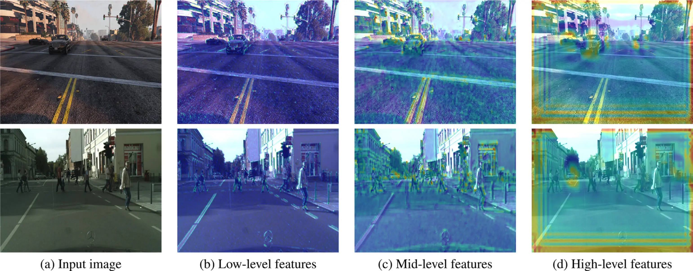

Understanding Thermal Image Enhancement
A deep dive into how GANs can be used to improve the quality of thermal imagery for better object detection.
Read ArticleDeep dives into computer vision, deep learning, and thermal imaging.
 AI Research
AI Research
A deep dive into how GANs can be used to improve the quality of thermal imagery for better object detection.
Read Article Tutorial
Tutorial
Essential tools and libraries you need to start your journey in computer vision using Python and OpenCV.
Read Article Project
Project
Optimizing YOLO models for edge devices like NVIDIA Jetson Nano to achieve high FPS in thermal feeds.
Read Article
AI ResearchHow Gradient-weighted Class Activation Mapping helps us understand what deep neural networks really see inside images.
Read ArticleNo articles found matching your search.